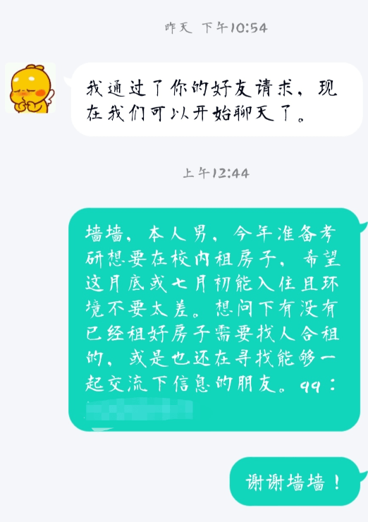
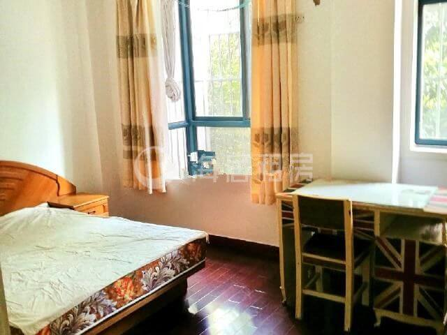

2021年6月26日
凌晨
在校找房进展缓慢，听到朋友的建议后第一次尝试向墙墙求助，发布了如下的求助帖。虽然是凌晨，但很快就收到了墙墙的回复，消息也于不久后成功发布。

消息发布后我就很快入睡了，
8点左右
收到了第一条好友请求，是一个电气的学弟。发了个可爱的表情过去，暂未得到回应。
09：27
学弟跟我打招呼啦，他自己整租了喻园一期的一套房子，想要找人合租来分担押金。
09：28
一个头像看着像是女孩子的朋友请求添加我为好友，有点惊讶但还是选择同意。点进资料栏一看：性别女，资料背景是那种女孩子喜欢的精致桌面布置，空间动态设置仅可见3天，但在资料卡中意外地能预览到最近一条说说发的毕业照。看来真是个妹子！
-等等，是不是有什么搞错了……
-怎么还会有女生加我？我记得有在消息的最开头说明了我是男生呀。
-难道是中介？不至于专门在空间放毕业照来增加信任度吧。
-那么，真相只有一个：她加错人了！
……
……
……
不管了，先打个招呼再说。试探性地发出问候
09：30
期待着很快能得到回复，不管是肯定或否定，也快点将谜底揭晓吧。
30秒过去了
1分钟过去了
2分钟过去了
5分钟过去了
自这两天开始找房以来，加了数不清的群，深刻体会体会过“看中某套房私戳房东不理怕被很快抢走”的心情。当等待成为一种习惯，虽有无奈，但这就是人间真实。
这次的私戳并没有“找房子”这种现实目的，仅仅是为了解答我心中的疑惑。闲暇无聊之际，突然发觉同为等待，心情却大不相同。脑海里闪过国外的一篇获奖的小说：
《当第一封情书寄出以后》
等……
啊！怎么总有些奇奇怪怪的想法冒出来(⁄ ⁄•⁄ω⁄•⁄ ⁄)⁄
大概是太少和女生打交道才变成了这样子……要脸，匿了！
接着和学弟聊天，希望今天能有所收获。
1小时过去了
学弟的房子环境和地理位置等方面都不错，闲聊间也能感受到对方将来会是个很好的朋友，但1650的高昂月租配合一年的租期打消了我租下这套的想法。学弟那边说他在准备考试，考虑这套房子得等他考试结束后再详聊，并建议我看看学校外面的房子。祝他复习顺利后我们结束了愉快的聊天。

这么久了呢，小姐姐那边还是没有回应。果然应该是加错了好友吧╥﹏╥
转念一想，如果是我自己碰到这种情况，确实也会尴尬得不知道说什么吧。
10：41
正在紧盯屏幕蹲守新发布的房源信息，突然弹出一条新的QQ消息提醒，点开一看，是那个熟悉的头像，她回了她回了！
一轮友好的互动后了解到小姐姐也要在校内租房准备二战，虽然目标是西边的房子但她表示愿意和我分享她收集到的租房信息。我向她diss了昨天看的第一套炒鸡无敌巨辣鸡的东教工单间后，小姐姐表示她看房的同时也会帮我留意合适的房源。
哇，这究竟是什么人间天使！在我最无助的时候前来雪中送炭的，竟是一个素不相识的陌生人，一定要好好认识一下。于是现学现用从上一个学弟那里get到的打招呼方式。
-请问这么好心的小姐姐怎么称呼呀
-17电信WXX
-17能源XXX
因为怕她有顾虑所以先自报身份，但没想到她丝毫没有犹豫地回报了自己的信息。
随后听她说之前看了一套1300价位的房，有点超她预算，但在我接受范围之内。本以为小姐姐会把房东的电话给我让我自己去跟她联系，然而小姐姐居然直接……
给 了 我 她 的 微 信 ！
啊啊啊啊啊，被一个陌生人信任着的感觉真好(>▽<)
接着向小姐姐请教了一些看房问题之后，我们的聊天阵地转移到了微信。她将房东的微信推荐给我之后，还详细地转发了她们之间的聊天记录，细心地指导我怎么跟房东阿姨沟通。知道我没啥经验后，小姐姐说她下午也要去那附近看另外一套房，如果时间约在一起还能见个面。
12：22
又是半小时煎熬的等待，房东阿姨终于通过了好友请求，又隔了一段时间才回复了我的消息。阿姨在我没有看房的情况下，发来一段房间内的视频，想要我先交定金再看房，我自然是不愿意的，但苦于没有其它房源信息，所以十分纠结，遂向小姐姐求教。也许觉得打字说不清楚，小姐姐直接发来了一段语音。她的声音软软的，语速偏慢但每个字发音都很清晰，言语间给人一种特别温柔的感觉。她建议我跟房东说说好话，向她求求情让我先看房再交定金。因为小姐姐之前跟房东有过沟通，所以我想着是不是告诉下房东我是她的朋友会比较好交流一些，于是之后我问了一个至今都觉得很后悔的问题：
-我能给她发你们聊天的截图吗
-她问我是哪个我也描述不清/笑哭
收到的回复中，小姐姐之前柔柔的声音似乎多了几分急促，表示这样应该不太好，建议我把她的头像截图给阿姨。可能是怕我失望，补发了一条语音，说要是我觉得不太清楚的话直接转发也可以。意识到发聊天记录不妥后我选择把她的头像发给阿姨，阿姨果然很快了解到我这边的情况。但冒昧地说出“能不能转发聊天记录”这样的话语，一定给她带来了许多的困扰吧。只好向她坦白我是个社交白痴并道歉。
14：17
下午我独自骑车来到西边，按着房东分享的定位来到康园小区，发现她那个地方并不在校内，而且需要通过一条电动车都没法骑只能并排走两个人的路进入小区内部。到达目的地后被眼前的景象惊呆了：小区内部的公告栏，电线杆上全是房屋招租信息，来来往往走动着的阿姨也都是出来揽租的房东。走到阿姨说的楼下，还没上去就看到一块大大的公寓广告牌，地址和房东阿姨发给我的是同一个。给小姐姐发了条消息，她说她也还在这边看房，让我在康园等等待会可以一起走。虽然挺不好意思的麻烦人家的，但还是有点害怕一个人上去跟房东交流，于是决定在小区四处转转等小姐姐出来。
14：34
-你在哪
终于等到了她的消息，我开始停下四处乱转的脚步，准备跟她描述我所在的位置。没等我字打完，小姐姐就发起了位置共享，定位中显示她就在之前的广告牌旁。但我还是选择跟着手机的导航，向她所在的圆点那里靠去。于是乎发生了又一件憨憨的事情：我的定位点随着手机的转动飘忽不定，我本人也像个傻子似的举着个手机在几个招租阿姨面前左转转右转转，阿姨们时不时朝我投来“小伙子，你要租房吗”(o≖◡≖)的眼神。在路痴本痴的骚操作下，成功做到了近在咫尺却咫尺天涯。小姐姐的定位点也追随着我那离谱的老人机定位去到了小区外，她转转悠悠了五六分钟，始终没能和我相遇。我蚌埠住了，主动向她说明我在之前她出来的地方等她。她没有回复，之后的几分钟里，她的定位点停在了小区外的一个地方。
此时的我，像极了跟家长走丢后不敢乱跑，只能待在原地期盼着早点被领走的小孩。
可怜弱小又无助:(
14：50
-到了
在收到这条消息前已经开始想象了，会是个怎样的女孩呢？头像是个穿着粉色浴衣（大概？）散着头发像是在逛庆典的日式动漫少女，不点开细看会觉得少女的鼻子部分是一张微笑着的小嘴，给人一种朦胧的美好。却终究是被面具遮住了脸，她本人会不会也像这样蒙上一层神秘的面纱，让人觉得舒心却又保持一些戒备的距离感呢？
转过身去看到一个像是也在找人的女孩，我朝她走近，四目相对，露出同样欣喜的表情，应该没错了。确认过身份后她开始给我介绍刚才看房的情况，知道我还没有上楼见房东后，小姐姐决定和我一起上去看一看。她走在前面带路，我跟在后面，一起进了电梯。这才开始注意起眼前的这个女孩：穿着很漂亮的一条裙子（原谅我这个直男的词典里对于女生的衣着只有“裤子”和“裙子”两种描述，其他的细节实在想不起来了毕竟自己没穿过QAQ），斜挎着一个小包，皮肤十分白皙，戴着精致的耳坠，身上有着一种香香的味道。
到了楼上，电话联系房东。在小姐姐甜言蜜语的攻势下，阿姨很快招架不住，同意带我们去房间看看。公寓的一整层像是酒店般的布局，每个房间都有独立的门牌号。打开房门后，不是我想象中的传统多居室房间，首先映入眼帘的是一块长方形的空荡区域，长方形的每条边上都有一个独立的门，门后是带有独立卫浴的房中房。
进入小房间后，空间的中央放置着一张床，床的周围与墙壁间有着不太宽阔的距离，能放一下自己的杂物。接着阿姨开始给我们介绍她的上一个租客多么爱干净房间多么整洁，这个房型多么热门我们运气好刚好她退租才能碰到等等。阿姨让我们快做决定不然很快就被别的同学租走了。虽然我觉得有些仓促，但好像也还能接受。考虑了一下后跟阿姨说想要跟朋友商量商量。但阿姨执意让我们先交定金不然别的同学看中后她不会给我们把房间留着。接连着找了几天房却一无所获的我有点害怕阿姨真的把房间给了别人，那样我就真的没地方住了，于是乖乖跟着阿姨去前台。
到了前台，阿姨坦率地直接拿出她的合同给我们看，熟练地讲上面的每一项条款。到这里事情就没那么简单了，原本以为1300包含了所有的费用，合同中却规定那只是基础的房间租金，每个月房客还要缴纳小区的物业费、燃气费等等。与此同时，阿姨还说她家公寓有正规营业执照，得按商业用水用电标准收费，几乎是学校寝室收费标准的两倍多。七七八八得费用加起来一个月支出可能要到1500了。我开始有点犹豫，如果这个费用在校内我可能勉强能接受，但在校外这么小的房间达到了这样的开销实在有点超出预期，这再加点钱我可以直接去找喻园的学弟合租了。校外租房最麻烦的是出入问题，于是我问了问阿姨之前似乎有意回避的出入证问题，阿姨果然又含糊其辞说不知道怎么办，但表示其他那么多学生能出入自然有他们的办法（现在我租到校内的房子才知道，只有租学校内部的房子且户主是老师才有资格给人办出入证）。我说想出去再考虑考虑，阿姨执意不让走，要我们当场交定金签合同。小姐姐只好婉言相求，阿姨还是只同意让我们坐在门口商量。
离开前台，我把心中的想法一一向小姐姐道出。小姐姐原先还打算她先交定金帮我定下，如果我不要她就住进去。但是刚才看过阿姨的合同后她也觉得开销太大，我们达成一致意见决定放弃这间。遂又进去道明缘由准备离开，阿姨又不让我们走，说会给我们适当减免煤气等等费用。恰巧这时来了另外几个看房的租客，阿姨让我们再考虑考虑，独自离开带别人看房间去了。但我们去意已决，出于礼貌决定等阿姨忙完，再次表明我们的心意后再道别离开。之后我们坐在门外的椅子上继续交换意见，阿姨带着租客在里面来来往往却始终不主动找我们聊。无可奈何，在我们被晾在外面近十分钟后终于找到合适的时机和阿姨搭话，阿姨这次也亮底牌了，直言道“我都同意了和其他房东商量给你们减免费用你们还是要走，所以你们给个你们心中的价位吧”。她这招冷处理+软硬兼施明显是老江湖了，但小姐姐的回应也展现出了同等段位的水平，先是欲抑先扬“我们不是觉得阿姨您的房间不好+夸夸夸”，然后再次强调“我们是学生，经济条件很有限”，最后一句“我们的预算是找校内1000左右的房子，您这边进出学校情况也不明朗”进行绝杀。从头到尾以理服人，被步步紧逼却依然彬彬有礼，小姐姐强大的交涉能力给我留下了深刻的印象。（高手过招实在精彩，本FW学废了学废了(。﹏。)）阿姨见状也不再阻拦，放我们扬长而去。
离开公寓前台，明明又成了无家可归的状态，我却长舒了一口气。又走进来时的电梯，寻找一楼的按键，正要按下时电梯里有个乘客说：我们是上去的。小姐姐反应过来后立马回头，见我怔在原地，拉起我的手，将我带出了电梯。然后我俩看到电梯上的楼层标识从7逐渐减小到6，到5。只留我俩在错愕地愣在原地，风中萧瑟。
等等，刚才发生了什么？
……
……
！！！！！！
母胎单身的我竟然被一个才认识一上午的女孩子牵了手（勉强算是吧:），然而一切发生过于迅速且突然，我都还没反应过来就已经结束。
回想起来，好像内心平平淡淡没啥特殊的感觉Σ( ° △ °|||)︴
等到下一趟电梯，再次上去。想起半天来的种种经历、与她交流时温柔亲切的语气、还有她说话时总爱把“咱”字挂在嘴边的习惯，此刻眼前娇小的她仿佛一下将“小”字甩开，给我一种“姐姐”般值得依赖的感觉。
16：45
在后续的沟通中了解到她要在考前的二十多天回家，因为之前档案去向填的是回原籍。我的第一反应自然是觉得在考前冲刺的那么一段时间突然换一个环境复习，还要忙活搬家等等杂事，对于她备考的心态可能不太利好。建议她尽早咨询辅导员，将也许还没调走的档案留下来。她也急急忙忙地去问辅导员，得到的回复是需要作为科研助理才能保留。我也去咨询了身边的同学，被告知档案留校并没有什么限制条件，而且考场所在地其实是跟户口挂钩。但小姐姐的户口在老家并未迁来。又上网寻求解决方案，了解到办理暂住证后能留下来考试，但办理周期好像有半年之长。之后的整个晚上都在百度或求问身边同样二战的同学，想要找到某种方法让小姐姐能安安心心留下来考试。
22：48
闲聊着问到了小姐姐去年的备考情况，室友保研又没其他合适朋友一起复习，几乎是一个人战斗到最后，但还是差了四十多分过线。虽然我自己的情况好不到哪去，但她好像更让人心疼，去年还有朋友陪伴，今年考研就要孑然一身了。于是给她安利了四君子的成功案例，厚着脸问道：
-感觉小姐姐人好好，有机会的话可以一起做研友吗（微信傻笑脸）
得到了很爽快的回应：
-哈哈，可以吖
之后就顺利规划起了未来的复习地点（小姐姐在西边，所以主图会方便一些。我之前早有耳闻东边房子很老旧破烂，但那天真正看过之后才知道离谱到那种程度，便立誓不再看东边的房子，这样一来主图也的确是个非常合适的选择）
又回到租房问题，小姐姐决定要订下午我们见面之前她自己看的那套公寓，但房东那边一直在等租客的续租回应，说第二天下午2点给她答复。我自己因为只看了一间所以暂时没啥目标地，但对于她的选择我有不太一样的看法。一是公寓房型高额的水电燃气物业等开销，二是那套房源要9号才能空出来而我们学校宿舍最多只能住到5号，三是校外房东不给解决进出校问题，四是这种一户一卫布局的公寓除了床之外没啥地方放置个人物品。但她想早点办完开始复习，我也没再多说，开始劝她放下怕麻烦别人的心理包袱，允许我在她搬家时过去帮忙（因为有些东西实在笨重，装箱后整个的重量应该不是她一个女孩子能够轻松应付的。而且她所租公寓地点就在寝室旁的一个小区，步行十分钟就能到，叫搬家公司显然不划算）
23：25
西边一片似乎断电了，她在燥热中试图用意念降温，而我延续之前的话题一直在介绍德邦的快递详情，完事还感慨我们东边几乎没停过电（现在想想真是钢铁理工男）。她只得自我安慰道：
-不行了，睡觉（傻笑脸）
-睡着了应该就不热了
我皮完不忘补刀：
-没事睡着了也会热醒的
-（doge）
道过晚安后，我接着寻找毕业生留校考研的方案，仍没有可靠的结果。窗外传来聒噪不安的蝉鸣，想着又是一无所获的一天，我开始为找房的事感到烦恼。临睡前打开手机，想看有没有新的房源发布。再见到那熟悉的少女头像，回想起一天中的奇妙经历，总能带着微笑，进入梦乡。